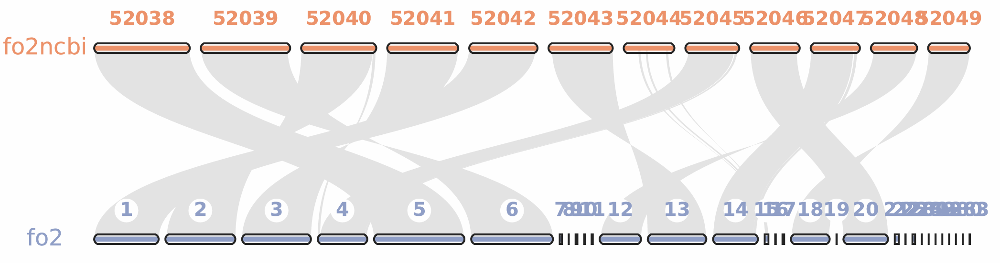
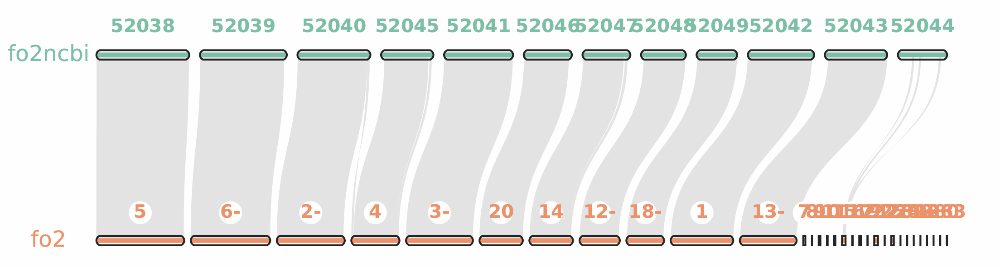
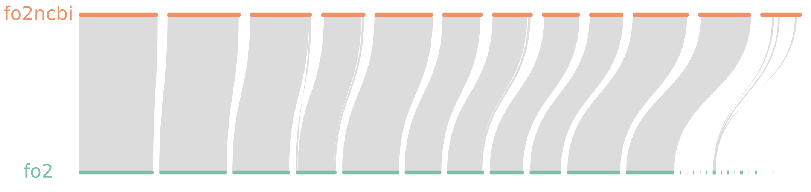

前言
我们在进行染色体共线性分析后，JCVI 会给我们绘制染色体共线矩阵图，但是为了更美观或图片更小，我们会选择绘制丝带图或其它更复杂的图表。
数据准备及处理
在使用 JCVI 进行共线性分析后，我们会得到 .anchors 文件：
- 如果你使用
.anchors文件进行绘图，画出来的彩色绸带非常干净、纯粹，代表了最无可争议的保守共线性区域。当两个物种亲缘关系极近，用这个文件就足够了。 - 如果你使用
.lifted.anchors文件进行绘图，画出来的彩色绸带会更丰满、复杂，代表了更全面的共线性区域。对于亲缘关系较远的物种，或者你想展示更多潜在共线性区域时，这个文件会更合适，它能展现更宏观、连续的演化事件。
在实际写文章时，大部分生信工程师会更偏爱使用 .lifted.anchors 来绘制宏观染色体共线性图，因为它的视觉连贯性更好。你可以两个都试着画一下，挑一张最漂亮的放进你的学位论文或报告里！但无论你用哪个，我们处理步骤都是相同的。
生成简化 .simple 块文件
JCVI 的 .anchors 文件包含了非常详细的共线性信息，但它的格式比较复杂，不太适合直接用来绘图。幸运的是，JCVI 提供了一个工具可以把 .anchors 文件转换成更简洁的 .simple 块文件，这个文件更适合用来绘制染色体共线图。
编写 seqids 配置文件
这个文件用来告诉 JCVI：你想在画布上展示两个物种的哪些染色体/Scaffolds，以及它们的排列顺序。
这个脚本可以根据你选择的 .bed 文件快速生成：
编写 layout 配置文件
这个文件是画布的配置文件，用来控制两个物种的纵坐标高度、水平缩放比例、颜色、标签以及它们之间怎么连线。
在你的工作目录下新建一个名为 layout 的文本文件（无后缀），直接复制并粘贴以下标准模板（示例）：
# 以下是样本参数配置：
# y, xstart, xend, rotation, color, label, va, bed
0.6, .1, .9, 0, , fo2ncbi, top, fo2ncbi.bed
0.4, .1, .9, 0, , fo2, top, fo2.bed
# 以下是画布参数配置：
# edges
e, 0, 1, fo2ncbi.fo2.lifted.anchors.simple
以下是样本参数配置：
- y：两个物种染色体条带在画布中的相对垂直高度
- xstart：染色体条带在画布中的起始相对水平位置
- xend：染色体条带在画布中的结束相对水平位置
- rotation：染色体条带的旋转角度
- color：染色体条带的颜色
- label：染色体条带的标签
- va：标签的垂直对齐方式
- bed：染色体条带对应的.bed文件
以下是画布参数配置：
- e：定义两个物种染色体条带之间的连接关系，指在第 0 和第 1 行直接绘制连线。
- fo2ncbi.fo2.anchors.simple：定义连接关系的数据来源，即之前生成的简化共线性块文件。
绘图及优化
JCVI 基础绘图
万事俱备，直接在终端敲下最核心的画图命令：
python -m jcvi.graphics.karyotype seqids layout这是预览图：

这是原始矩阵图：

可以看出目前的丝带图非常丑，包括但不限于：
- 出现大量不必要的交叉，影响视觉效果
- 丝绸发生扭转
- 字体乱七八糟
没有出现丝绸的染色体原因见分析文章。
首先我们来优化，调整一下样本染色体位置，尽可能把共线的放到一起，并解决交叉问题。我们只需要在 seqids 文件里把染色体的顺序调整一下，对交叉染色体进行翻转（在 id 后面加一个减号“-”）。
# 调整前
CP052038.1,CP052039.1,CP052040.1,CP052041.1,CP052042.1,CP052043.1,CP052044.1,CP052045.1,CP052046.1,CP052047.1,CP052048.1,CP052049.1
ptg000001l,ptg000002l,ptg000003l,ptg000004l,ptg000005l,ptg000006l,ptg000007l,ptg000008l,ptg000009l,ptg000010l,ptg000011l,ptg000012l,ptg000013l,ptg000014l,ptg000015l,ptg000016l,ptg000017l,ptg000018l,ptg000019l,ptg000020l,ptg000021l,ptg000022l,ptg000025l,ptg000026l,ptg000028l,ptg000039l,ptg000048l,ptg000098l,ptg000126l,ptg000280l,ptg000283l
# 调整后
CP052038.1,CP052039.1,CP052040.1,CP052045.1,CP052041.1,CP052046.1,CP052047.1,CP052048.1,CP052049.1,CP052042.1,CP052043.1,CP052044.1
ptg000005l,ptg000006l-,ptg000002l-,ptg000004l,ptg000003l-,ptg000020l,ptg000014l,ptg000012l-,ptg000018l-,ptg000001l,ptg000013l-,ptg000007l,ptg000008l,ptg000009l,ptg000010l,ptg000011l,ptg000015l,ptg000016l,ptg000017l,ptg000019l,ptg000021l,ptg000022l,ptg000025l,ptg000026l,ptg000028l,ptg000039l,ptg000048l,ptg000098l,ptg000126l,ptg000280l,ptg000283l

让我来新加一些需求和外观：
- 隐藏染色体的数字标签，我们会在 Adobe AI 中手动标注。
- 去除染色体的黑色描边，使其更美观。
- 两套染色体共享同样的比例尺，更严谨。
- 输出为 svg 格式。
矢量图输出：
python -m jcvi.graphics.karyotype seqids layout -o karyotype.svg --notex
# 如果不要染色体名称，则加入参数 --nocircles
python -m jcvi.graphics.karyotype seqids layout -o karyotype.svg --nocircles --notex
黑色的描边很丑陋，我们可以利用这个脚本对生成的 .svg 直接进行代码层次的清洗：
效果：

其实仅依赖 JCVI 的 matplotlib 绘图，我们就已经可以实现非常不错的效果了，下面的工具能使你的图更不得了。
SynVisio 快捷绘图
目前并没有解决 JCVI 到 SynVisio 的格式转换问题，也无法知道到底是哪里出了问题，初步怀疑是 SynVisio 的解析器有问题，前端控制台跳出报错后但控制台无响应。稍后我们会尝试使用 MCScanX 流程。
SynVisio 是非常著名的 MCScanX 结果纯前端在线可视化平台，你经常会在各种论文中看到它的影子，它和 JCVI 组合能绘画出许多复杂漂亮的图片。
SynVisio 需要两个输入文件：简化版的 .gff 文件和一个标准的 .collinearity 文件，这其实对应了我们 JCVI 流程的两个输出文件：.bed 和 .anchors 文件。
但是 SynVisio 是专门为 MCScanX 的输出格式设计的，但是 JCVI 流程和 MCScanX 底层逻辑是一致的，我们必须自己搭建脚本流程来对它们进行格式兼容性转换，下面这个脚本整合了两类文件的转换：
TBtools 快捷绘图
TBtools 也可以绘制共线图，但是你还不如直接调用 JCVI 内置的绘图功能。
R 绘图
绘图的特异性比较强，需要写特定图的代码。
circos 绘图
circos 是一个非常强大的环形图绘制工具，虽然它的学习曲线比较陡峭，但一旦掌握了它，你就可以绘制出非常复杂和美观的共线图。你需要把 JCVI 的输出文件转换成 circos 的输入格式，然后编写 circos 的配置文件来控制图的外观和细节。我们会在后面写一篇博客单独介绍 circos，共线性只是其中的一个 layer。